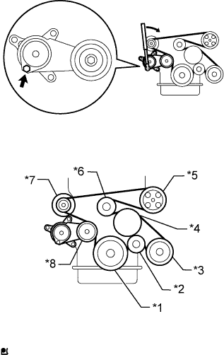

ЛОПАСТНОЙ НАСОС (для моделей с 2TR-FE) > УСТАНОВКА |
| 1. УСТАНОВИТЕ ЛОПАСТНОЙ НАСОС В СБОРЕ |
Закрепите лопастной насос 2 болтами.
| 2. ПОДСОЕДИНИТЕ НАГНЕТАТЕЛЬНЫЙ ПАТРУБОК В СБОРЕ |
Присоедините новую прокладку и нагнетательный патрубок к лопастному насосу с помощью болта-штуцера.
Подсоедините 2 разъема.
| 3. ПОДСОЕДИНИТЕ ВОЗВРАТНЫЙ ШЛАНГ |
Подсоедините шланг и закрепите фиксатором.
| 4. УСТАНОВИТЕ ПОЛИКЛИНОВОЙ РЕМЕНЬ ВЕНТИЛЯТОРА И ГЕНЕРАТОРА |
|  |
Установите поликлиновой ремень на все шкивы, кроме шкива натяжителя приводного ремня.
| *1 | Шкив коленчатого вала |
| *2 | Опорный ролик |
| *3 | Компрессор системы кондиционирования |
| *4 | Шкив вентилятора |
| *5 | Лопастной насос |
| *6 | Опорный шкив № 1 |
| *7 | Генератор |
| *8 | Натяжитель ремня |
С помощью шестигранника, указанного на рисунке стрелкой, сдвиньте шкив натяжителя вниз, а затем установите поликлиновой ремень на шкив натяжителя.
| 5. ПОДСОЕДИНИТЕ ПРОВОД К ОТРИЦАТЕЛЬНОМУ ВЫВОДУ АККУМУЛЯТОРНОЙ БАТАРЕИ |
| 6. ДОБАВЬТЕ ЖИДКОСТЬ ДЛЯ МЕХАНИЗМА РУЛЕВОГО УПРАВЛЕНИЯ С УСИЛИТЕЛЕМ |
| 7. УДАЛИТЕ ВОЗДУХ ИЗ СИСТЕМЫ РУЛЕВОГО УПРАВЛЕНИЯ С УСИЛИТЕЛЕМ |
Проверьте уровень жидкости.
Поддомкратьте переднюю сторону автомобиля и установите ее на подставки.
Поверните рулевое колесо.
При выключенном двигателе медленно поверните рулевое колесо между мертвыми точками несколько раз.
Опустите автомобиль.
Запустите двигатель.
Дайте двигателю поработать на холостом ходу в течение нескольких минут.
Поверните рулевое колесо.
Во время работы двигателя на холостом ходу поверните рулевое колесо влево или вправо до упора и удерживайте его в таком положении в течение 2-3 с, затем поверните в противоположном направлении до упора и удерживайте его в этом положении также в течение 2-3 с.*1
Повторите операцию *1 несколько раз.
Выключите двигатель.
 |
Проверьте отсутствие вспенивания и эмульсификации.
| *a | ПРАВИЛЬНО |
| *b | НЕПРАВИЛЬНО |
Проверьте уровень жидкости.
| 8. ПРОВЕРЬТЕ, НЕТ ЛИ УТЕЧЕК ЖИДКОСТИ ДЛЯ МЕХАНИЗМА РУЛЕВОГО УПРАВЛЕНИЯ С УСИЛИТЕЛЕМ |